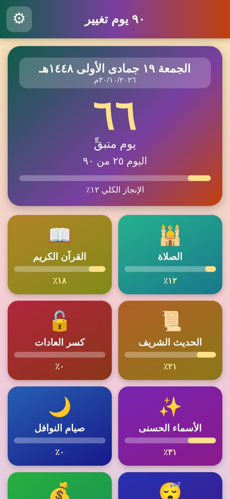
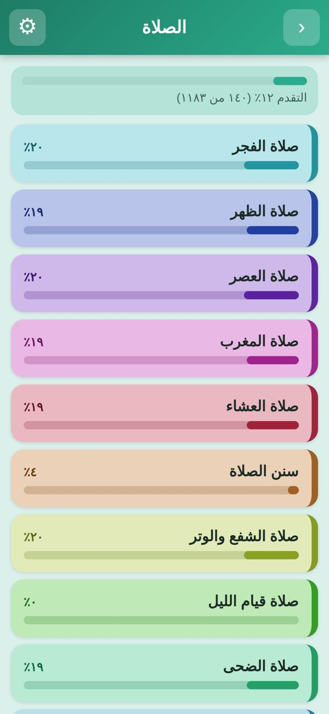
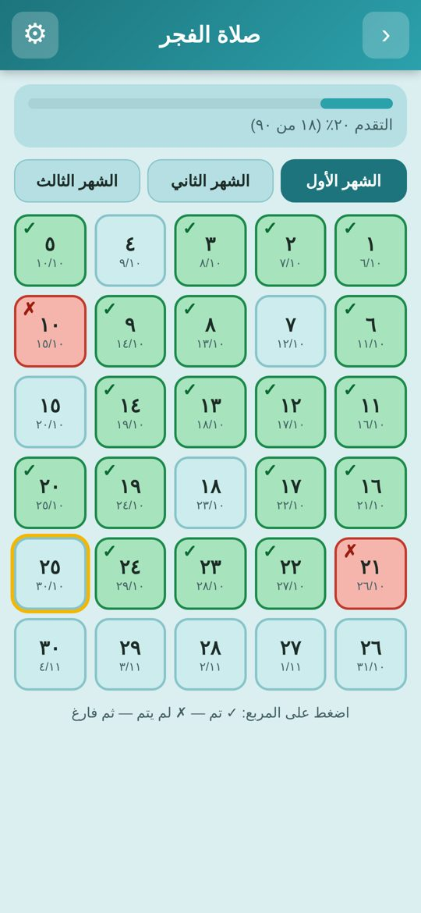
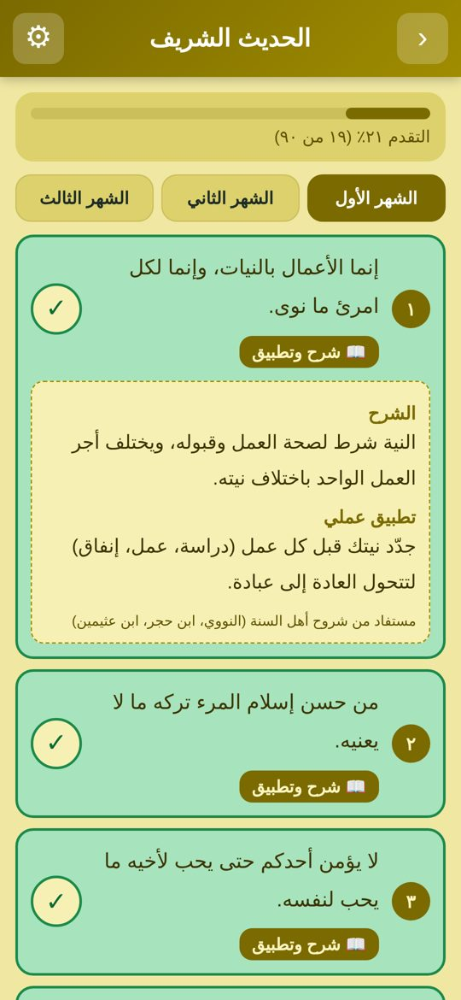
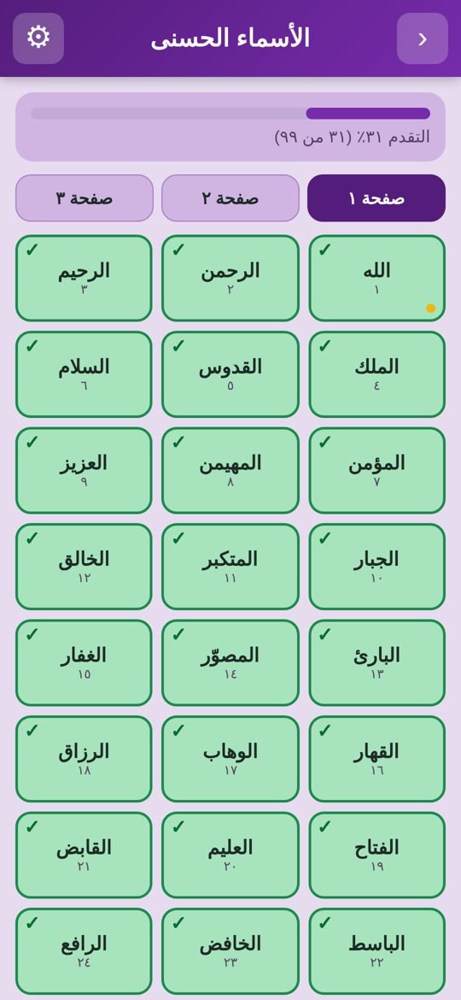
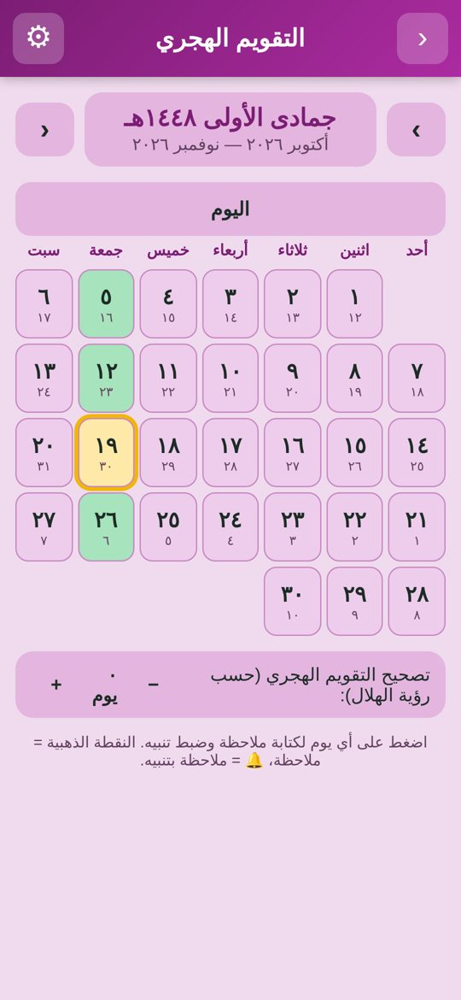

المميزات
🕌 الصلاةالفرائض والسنن والشفع والوتر وقيام الليل والضحى وصلاة التسابيح.
📖 القرآن الكريمالختم والتدبر والحفظ والمراجعة بتواريخ تُحسب تلقائيًا.
📜 الحديث الشريف٩٠ حديثًا من رياض الصالحين مع شرح مختصر وتطبيق عملي.
✨ الأسماء الحسنى٩٩ اسمًا بمعانيها وكيفية التعبد بها ومساحة لما استفدته.
🔓 كسر العادات٤ مربعات خاصة بكلمة سر، واسم العادة لا يظهر على الشاشة.
🌙 صيام النوافلالاثنين والخميس والأيام البيض بالتاريخ الهجري.
🗓️ التقويم الهجريمع تصحيح التاريخ، وملاحظات لكل يوم، وتنبيهات على شاشة الهاتف.
📿 الأذكارأذكار الصباح والمساء كاملة من الصحيحين والسنن، مع عدّاد للتكرار و٢٣ خانة لأذكارك الخاصة.
✎ تعديل وحذف ومنبهاتعدّل أو احذف أي عنصر في أي قسم، واضبط منبهًا يوميًا بالوقت الذي تختاره لكل عنصر.
📱 ويدجت الشاشة الرئيسيةالأيام المتبقية والتاريخ الهجري ونسبة الإنجاز تظهر على شاشة هاتفك وتتحدث تلقائيًا كل يوم.
📄 تقرير PDFتقرير شامل بكل الأقسام ونسب الإنجاز.
لقطات من التطبيق






طريقة التثبيت
- اضغط زر تحميل التطبيق ثم نزّل ملف
APKمن أحدث إصدار. - افتح الملف من التنزيلات، ووافق على "التثبيت من مصادر غير معروفة" إذا طُلب منك.
- افتح التطبيق، واختر تاريخ بداية الـ٩٠ يومًا، وابدأ.
التطبيق يعمل بدون إنترنت، وكل بياناتك تبقى على جهازك فقط.